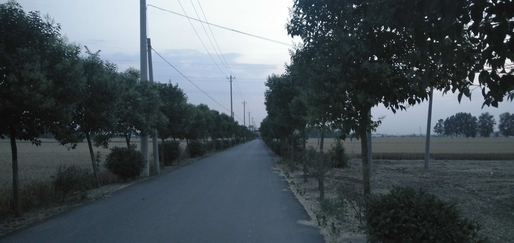
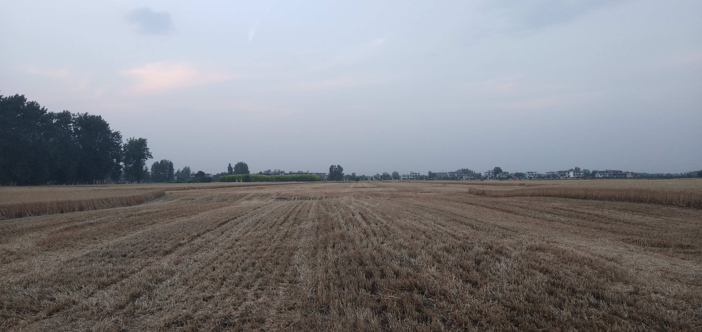

+ date = '2020-05-28T23:53:02+08:00' slug = 'Home cut wheat' tags =
['随笔'] title = '回家割麦子记事' +

Figure 1: 夜晚

Figure 2: 田野
这两张照片不错，值得高兴的是：我决定在博客中使用图片了，不过是极少数情况下。
这几天家里的麦子熟了，可以进行收割了。我回家用手割了一些麦子，那些位于边角处的麦子联合收割机到不了的地方，就由手工收割了。
在割的时候，被父亲训：干活不动脑子。割的方式不对，太慢。我当时就想反驳说，我是第一次割麦子，做成这样已经很不错了。我没有说，因为说这些没有用，还不如加快速度多割点麦子呢。
我在干体力活时，不太爱动脑子，一来是不以它为生活主要，权当是体验生活，所以动脑子在干农活这里就显得浪费了。二来，我只是一直做，在以前稍年轻时，我处于一种十分迫切地想要结束劳动的心态。现在没有了那种焦虑，我只当这是我生活的一部分，我必须要完成它。
在今天回家的路上，我脑子突然想起一件事：写作博客是一件很长永远的事情，短期内没有人来看再正常不过了。所以，我不用再操心博客浏览量的事情。如果我的文章对别人有帮助，别人自然会仔细阅读、静静揣摩、小心收藏。
20200530：
在中国，任何超脱飞扬的思想都会砰然坠地的，现实的引力太强了。
在你得意忘形的时候现实总会给你以重击，让你知道不面对现实的代价。
今天本来是在家写作业，没想到被父亲叫回家去，说是需要人看着，他去拉麦子，家里没人。本来还想像以前那样，说一声“不去”了事，但是我没有。把笔记本装包就回来了。